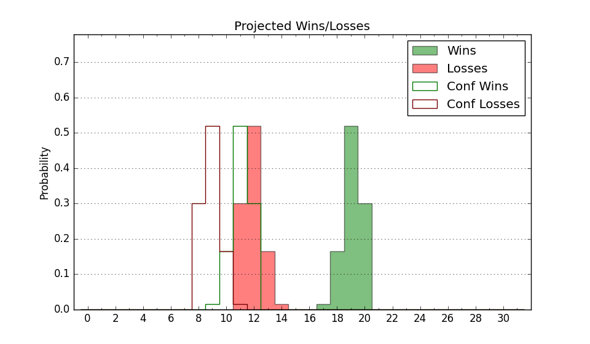

| Home | Game Probabilities | Conferences | Preseason Predictions | Odds Charts | NCAA Tournament |
| City: | Winston-Salem, North Carolina | |
| Conference: | ACC (7th)
| |
| Record: | 9-8 (Conf) 17-11 (Overall) | |
| Ratings: | Comp.: 10.7 (80th) Net: 10.7 (81st) Off: 113.3 (28th) Def: 102.6 (170th) SoR: 15.1 (76th) |
| Remaining | ||||||
|---|---|---|---|---|---|---|
| Date | Opponent | Win Prob | Pred. | |||
| 2/25 | Notre Dame (177) | 84.4% | W 82-70 | |||
| 2/28 | Boston College (171) | 83.4% | W 79-68 | |||
| 3/4 | @ Syracuse (100) | 42.9% | L 76-78 | |||
| Previous | Game Score | |||||
| Date | Opponent | Win Prob | Result | Off | Def | Net |
| 11/7 | Fairfield (237) | 91.1% | W 71-59 | -11.3 | 6.1 | -5.2 |
| 11/11 | Georgia (151) | 81.8% | W 81-71 | -5.6 | 6.3 | 0.6 |
| 11/15 | Utah Valley (81) | 64.9% | W 68-65 | -18.6 | 14.0 | -4.5 |
| 11/18 | (N) La Salle (235) | 84.2% | W 75-63 | -12.0 | 8.8 | -3.3 |
| 11/20 | (N) Loyola Marymount (97) | 57.3% | L 75-77 | -14.1 | 9.9 | -4.1 |
| 11/23 | South Carolina St. (344) | 97.1% | W 105-74 | 8.6 | 0.6 | 9.3 |
| 11/26 | Hampton (350) | 97.5% | W 97-70 | 2.9 | -6.2 | -3.3 |
| 11/29 | @Wisconsin (68) | 30.3% | W 78-75 | 15.2 | -1.0 | 14.3 |
| 12/2 | @Clemson (76) | 32.7% | L 57-77 | -25.1 | 2.9 | -22.2 |
| 12/10 | (N) LSU (153) | 71.2% | L 70-72 | -11.6 | -0.6 | -12.2 |
| 12/14 | Appalachian St. (185) | 85.6% | W 67-66 | -13.1 | -5.9 | -19.1 |
| 12/17 | @Rutgers (35) | 20.6% | L 57-81 | -8.4 | -9.6 | -18.0 |
| 12/20 | Duke (33) | 46.2% | W 81-70 | 9.7 | 8.5 | 18.2 |
| 12/31 | Virginia Tech (62) | 58.3% | W 77-75 | -1.9 | 7.1 | 5.2 |
| 1/4 | @North Carolina (46) | 23.9% | L 79-88 | 4.7 | -10.7 | -5.9 |
| 1/7 | @Louisville (287) | 80.9% | W 80-72 | 9.3 | -8.7 | 0.6 |
| 1/11 | Florida St. (207) | 88.2% | W 90-75 | 5.0 | -9.1 | -4.2 |
| 1/14 | @Boston College (171) | 59.6% | W 85-63 | 15.3 | 11.6 | 26.9 |
| 1/17 | Clemson (76) | 62.4% | W 87-77 | 13.1 | 1.3 | 14.4 |
| 1/21 | Virginia (27) | 45.4% | L 67-76 | -3.6 | -6.8 | -10.4 |
| 1/25 | @Pittsburgh (61) | 28.9% | L 79-81 | 11.9 | -10.2 | 1.8 |
| 1/28 | North Carolina St. (41) | 49.4% | L 77-79 | 4.4 | -6.5 | -2.1 |
| 1/31 | @Duke (33) | 20.1% | L 73-75 | -1.1 | 2.4 | 1.3 |
| 2/4 | @Notre Dame (177) | 61.4% | W 81-64 | 1.1 | 17.9 | 19.1 |
| 2/7 | North Carolina (46) | 51.6% | W 92-85 | 4.4 | 6.0 | 10.4 |
| 2/11 | Georgia Tech (193) | 86.1% | W 71-70 | -6.4 | -10.6 | -17.0 |
| 2/18 | @Miami FL (28) | 19.6% | L 87-96 | 8.9 | -7.6 | 1.3 |
| 2/22 | @North Carolina St. (41) | 22.3% | L 74-90 | 8.3 | -16.2 | -7.9 |
| Stats & Trends | |||||
|---|---|---|---|---|---|
| Current | Day | Week | Month | Season | |
| Composite | 10.7 | -- | -0.2 | +0.6 | +5.4 |
| Comp Rank | 80 | -- | -1 | -1 | +27 |
| Net Efficiency | 10.7 | -- | -0.2 | +0.3 | -- |
| Net Rank | 81 | -- | -2 | -2 | -- |
| Off Efficiency | 113.3 | -- | +0.6 | +1.5 | -- |
| Off Rank | 28 | -- | +2 | +6 | -- |
| Def Efficiency | 102.6 | -- | -0.9 | -1.2 | -- |
| Def Rank | 170 | -- | -21 | +3 | -- |
| SoS Rank | 76 | -- | +11 | +14 | -- |
| Exp. Wins | 19.1 | +0.0 | -0.5 | -0.3 | +5.4 |
| Exp. Conf Wins | 11.1 | +0.0 | -0.5 | -0.3 | +4.1 |
| Conf Champ Prob | 0.0 | -- | -- | -0.6 | -0.4 |

| Advanced Stats | ||
|---|---|---|
| Stat | Value | Rank |
| Off Eff FG % | 0.574 | 9 |
| Off Ast Ratio | 0.152 | 112 |
| Off ORB% | 0.227 | 299 |
| Off TO Rate | 0.150 | 126 |
| Off FT Ratio | 0.388 | 32 |
| Def Eff FG % | 0.512 | 198 |
| Def Ast Ratio | 0.133 | 106 |
| Def ORB% | 0.250 | 102 |
| Def TO Rate | 0.162 | 140 |
| Def FT Ratio | 0.255 | 43 |